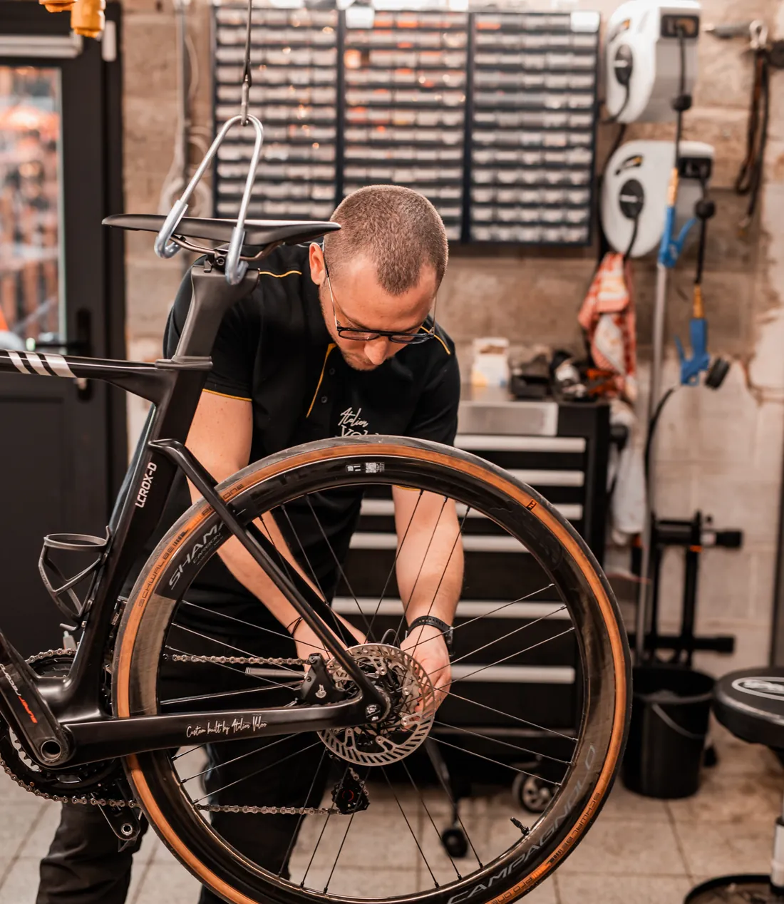
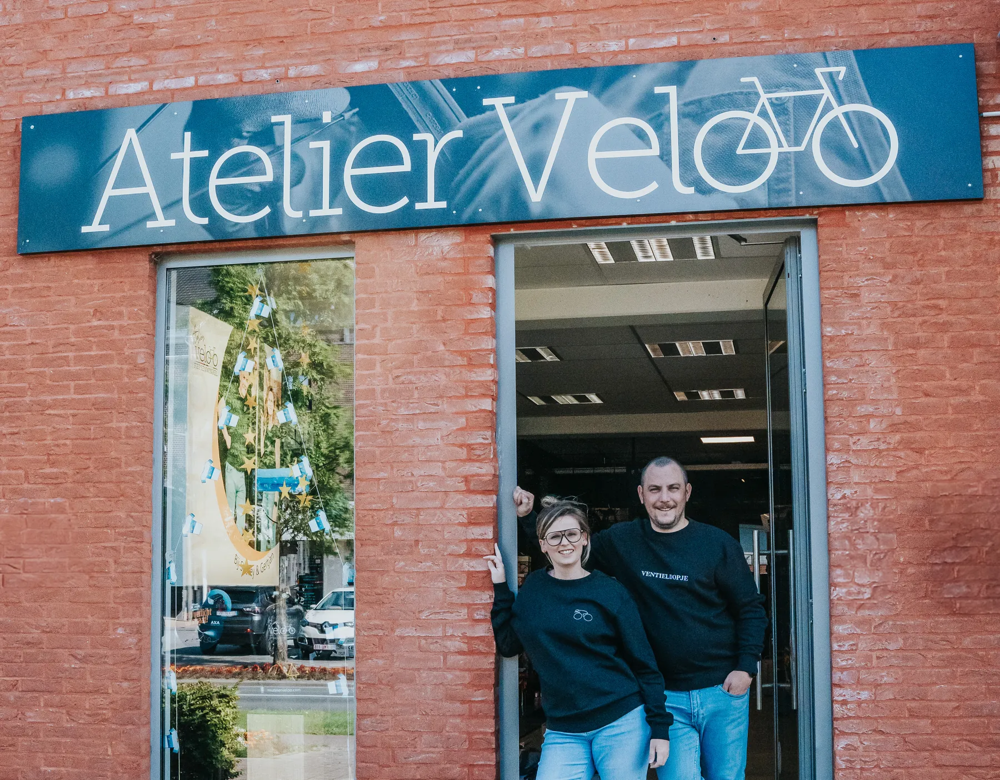
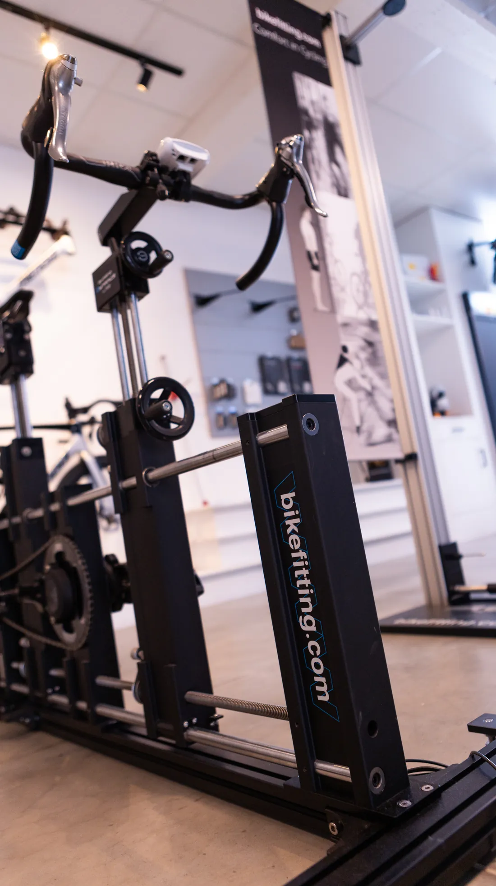
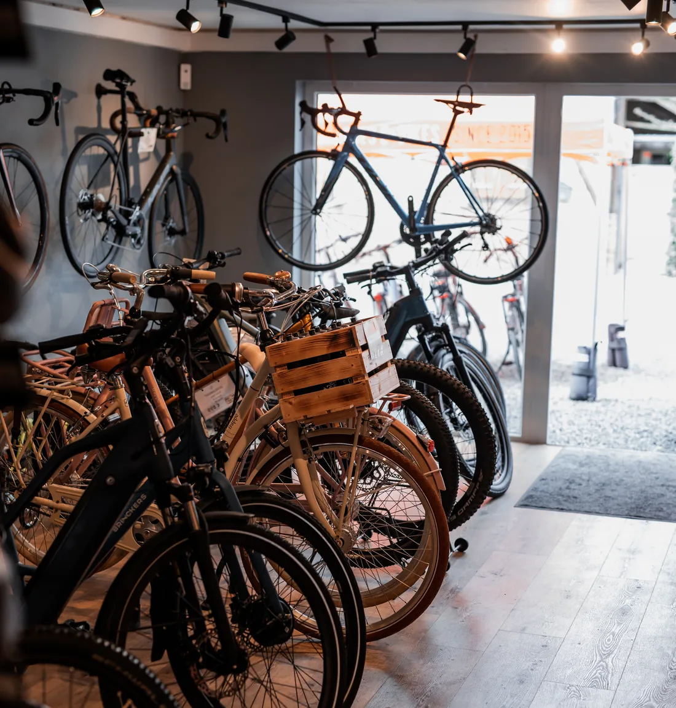
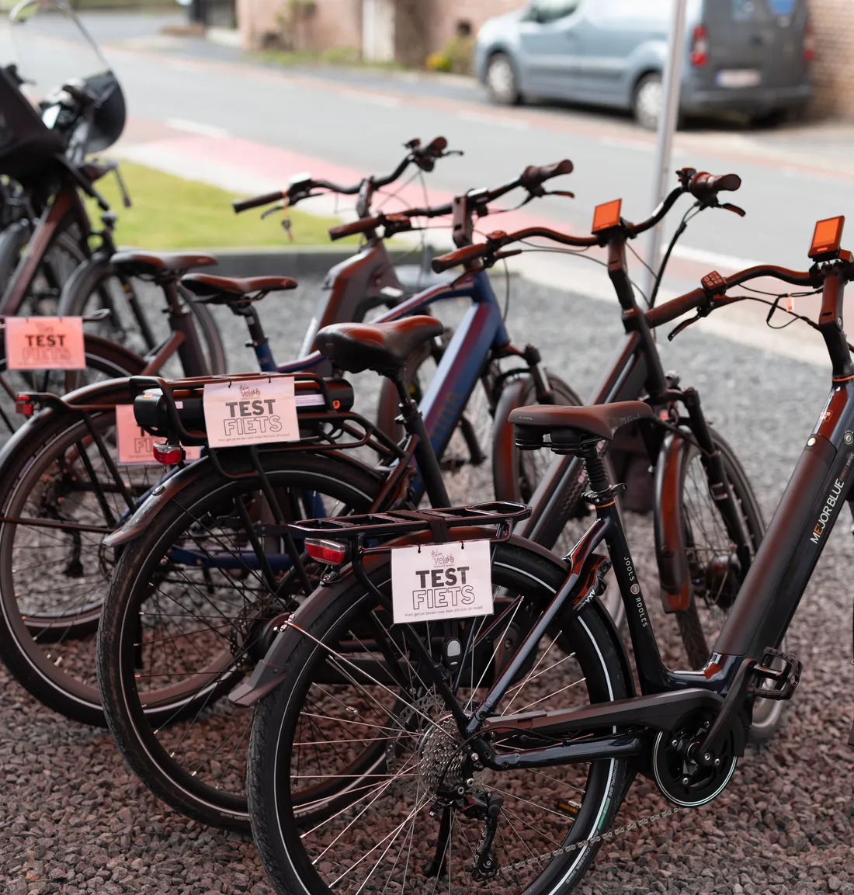
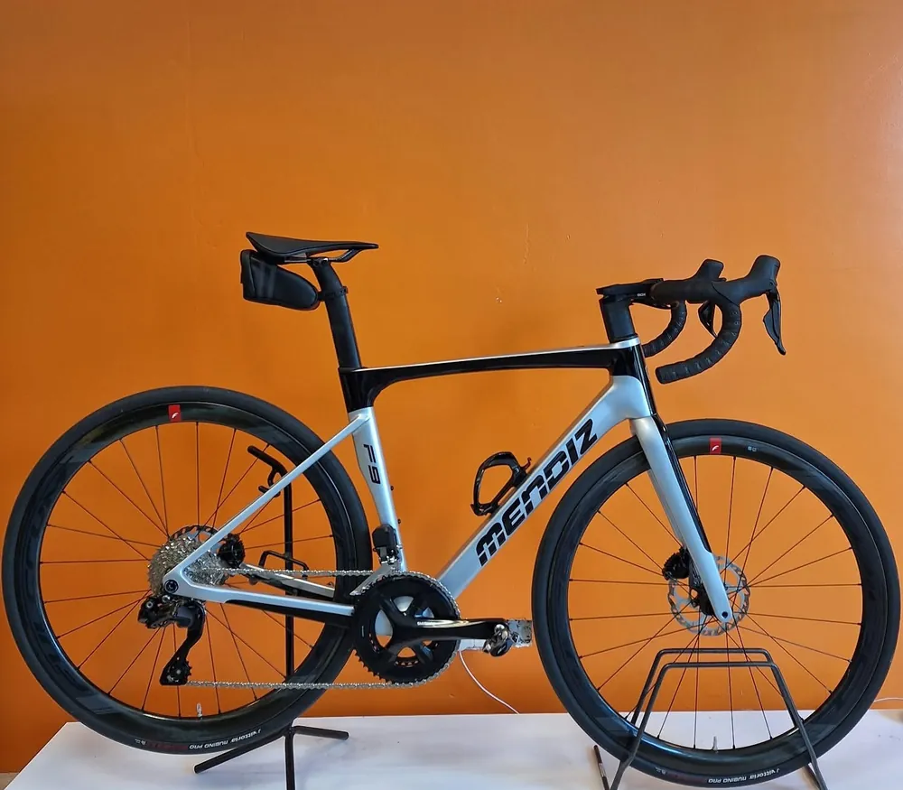
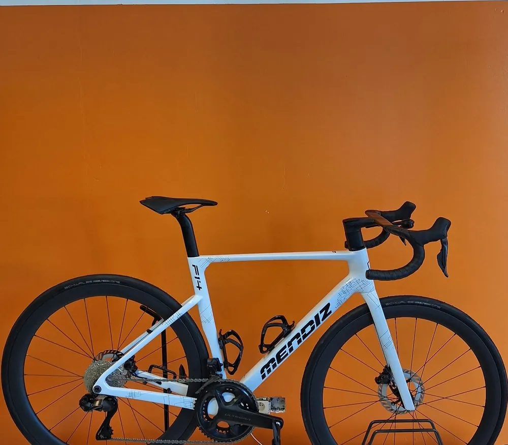
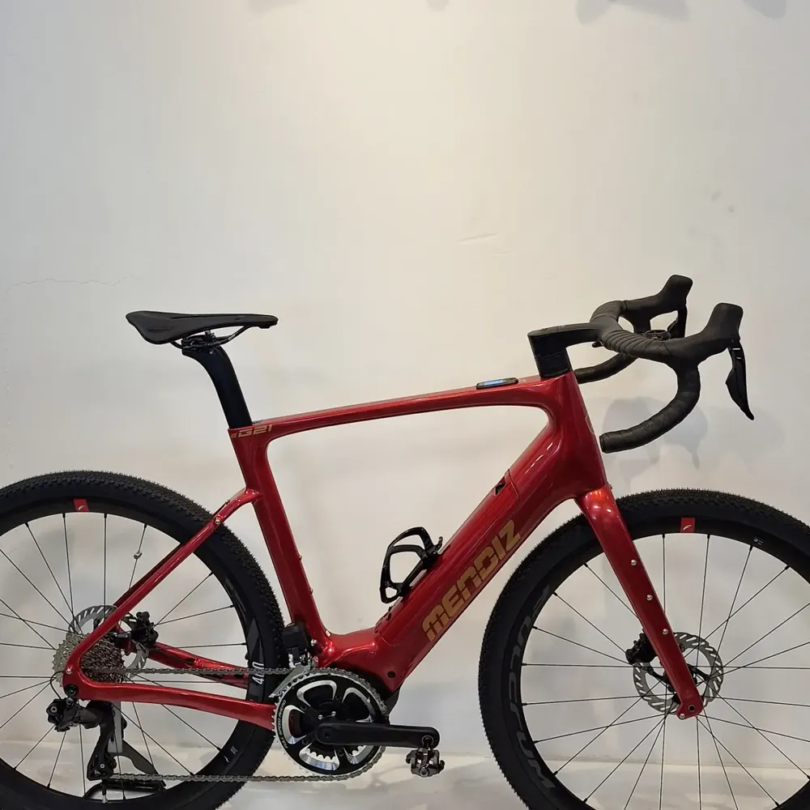
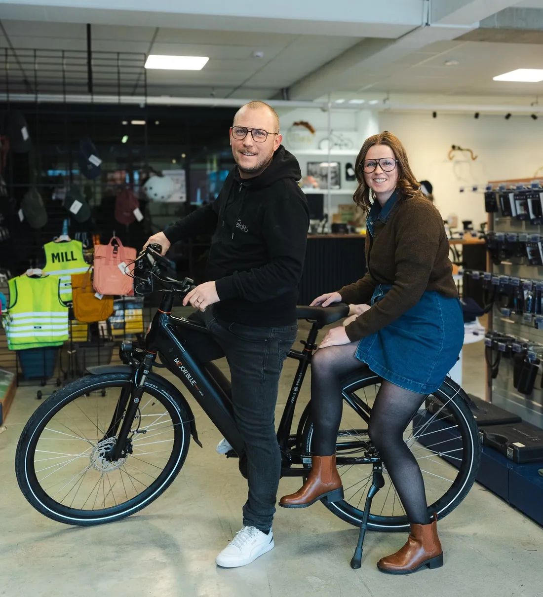
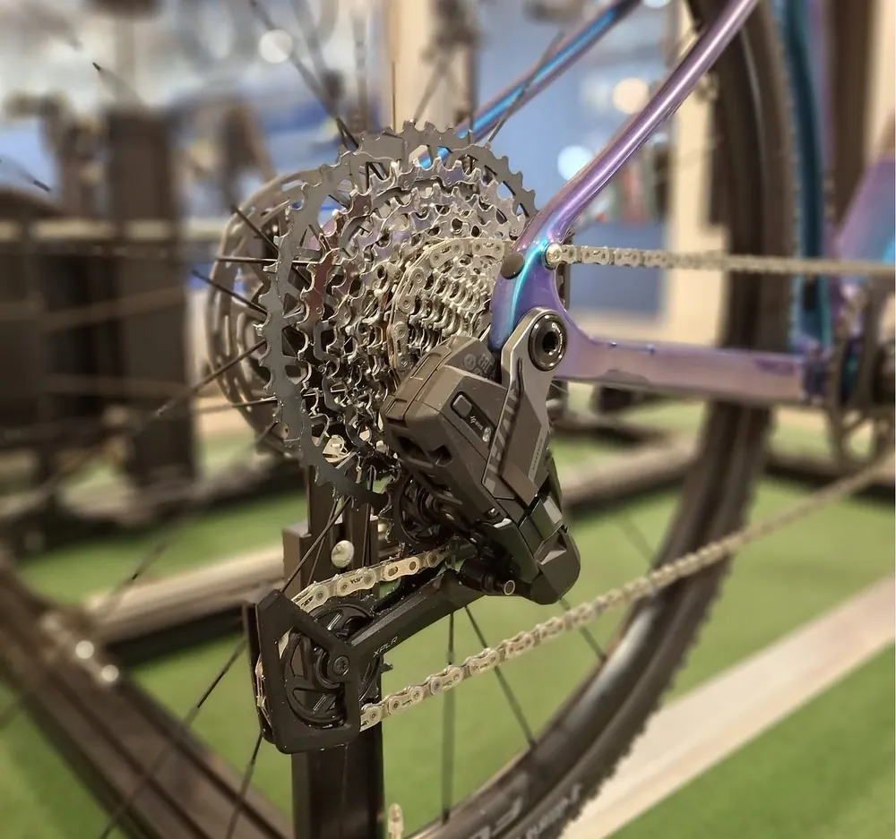

Onderhoud & herstel
Van een lekke band tot een groot onderhoud. Waar het kan, werken we met originele onderdelen.
Maak je afspraakShelley en Gertjan herstellen, verkopen en stellen fietsen af in hun eigen atelier aan de Dorpsstraat. Van je dagelijkse e-bike tot een racefiets die helemaal op maat gebouwd is.

Een goede fietsbeleving bestaat uit heel wat stukjes: de juiste fiets, het juiste advies en een werkplaats die je fiets in topvorm houdt. Bij ons hoef je het niet allemaal zelf uit te zoeken.

Van een lekke band tot een groot onderhoud. Waar het kan, werken we met originele onderdelen.
Maak je afspraak
Rugpijn, zadelpijn of slapende handen? Met een dynamische meting zoeken we de oorzaak en brengen we lichaam en fiets in balans.
Plan een bikefitting
Sportief, elektrisch of voor elke dag. We luisteren eerst, en zoeken dan samen de fiets die bij jou past. Een proefrit hoort erbij.
Kom langs
Haspengouw verkennen op een e-bike? Huur er een bij ons, de routes met knooppunten leggen we voor je klaar.
ReserveerCiöcc en Mendiz bouwen we op naar jouw maat en smaak: race, gravel of elektrisch, met de groep en de wielen die jij kiest. Kom gerust langs voor een testrit of een offerte op maat.

Een sportieve uitstraling, een strak design en helemaal klaar om de weg op te gaan.

In augustus opgehaald door een trotse nieuwe eigenaar. Sindsdien heeft hij al heel wat kilometers op de teller.

In Metallic Red. Rijdt sinds mei rond bij zijn nieuwe eigenaar.
Een technisch gekwalificeerde winkel die het merk ook na verkoop volledig ondersteunt.


In juli 2019 begon Atelier Veloo als werkplaats voor herstellingen en onderhoud. Sinds 2021 kan je bij ons ook een nieuwe fiets kopen, in onze vernieuwde showroom aan de Dorpsstraat in Wellen.
We zijn pas tevreden als jij je fiets met een glimlach komt ophalen. Daarom blijven we bijleren, zodat we ook de nieuwste systemen goed kunnen onderhouden.
Shelley & Gertjan
Super vriendelijke en snelle service! Ze hebben de dag zelf nog geholpen, waardoor ik de volgende dag nog aan mijn wedstrijd kon deelnemen. Echte topservice, zeker een aanrader!
Prima werk geleverd en realistisch budget gegeven vanaf het begin. Mijn Trek Super Commuter 7+s was hard verroest doordat mijn familie deze in de regen had laten staan terwijl ik een aantal maanden in het buitenland was. Hij rijdt nu terug als nieuw.
Snelle service. En super vriendelijke bediening. We stonden in Vrolingen met kapotte band. Werden vlot en goed geholpen door atelier veloo.
Bel even voor een herstelling of bikefitting, dan plannen we meteen een moment dat voor jou past.
| Maandag | Gesloten |
| Dinsdag | 10u tot 12u, 13u tot 18u |
| Woensdag | 10u tot 13u30 |
| Donderdag | 13u tot 18u |
| Vrijdag | 13u tot 18u |
| Zaterdag | 10u tot 16u |
| Zondag | Gesloten |
Volg ons op Instagram voor aangepaste uren tijdens vakanties en opleidingen.
Ik maakte deze demo voor jullie om te tonen wat er kan. Na een kort gesprek maak ik er iets veel persoonlijkers van, helemaal naar jullie wens.
Vrijblijvend. Ik kom langs of we bellen.
Op maat, op jullie eigen domein.
Geen voorschot. Jullie betalen pas als alles klaar is.
Hosting, domeinnaam en kleine wijzigingen, zoals nieuwe openingsuren.
Omdat een voorbeeld meer zegt dan een mail. Zo zien jullie meteen wat er kan, en het kost jullie niets.
Nee. Het gesprek is vrijblijvend. Vinden jullie het niks, dan is het daarmee gedaan.
Na ons gesprek staat jullie site binnen 10 tot 14 dagen online.
Zeker. Jullie domeinnaam kan gewoon blijven, de nieuwe site komt in de plaats van de oude.
Nee, dat doe ik op basis van ons gesprek. Eigen foto's zijn mooi meegenomen, maar niet nodig om te starten.